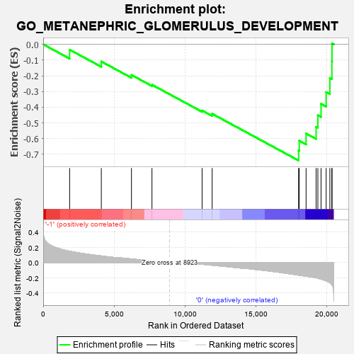
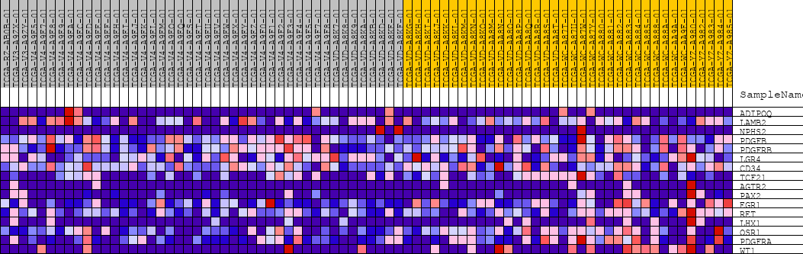
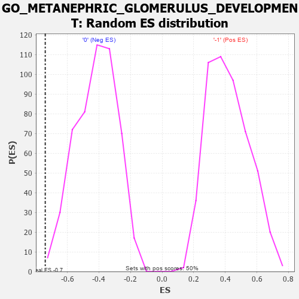

| | | Dataset | GSEAExpression.phenotype_uvm.cls#-1_versus_0 |
| Phenotype | phenotype_uvm.cls#-1_versus_0 |
| Upregulated in class | 0 |
| GeneSet | GO_METANEPHRIC_GLOMERULUS_DEVELOPMENT |
| Enrichment Score (ES) | -0.7395023 |
| Normalized Enrichment Score (NES) | -1.7712183 |
| Nominal p-value | 0.001980198 |
| FDR q-value | 1.0 |
| FWER p-Value | 0.909 |
Table: GSEA Results Summary

Fig 1: Enrichment plot: GO_METANEPHRIC_GLOMERULUS_DEVELOPMENT
Profile of the Running ES Score & Positions of GeneSet Members on the Rank Ordered List
| PROBE | DESCRIPTION
(from dataset) | GENE SYMBOL | GENE_TITLE | RANK IN GENE LIST | RANK METRIC SCORE | RUNNING ES | CORE ENRICHMENT | | 1 | ADIPOQ | na | | | 1866 | 0.148 | -0.0339 | No |
| 2 | LAMB2 | na | | | 4104 | 0.087 | -0.1094 | No |
| 3 | NPHS2 | na | | | 6232 | 0.047 | -0.1948 | No |
| 4 | PDGFB | na | | | 7680 | 0.022 | -0.2570 | No |
| 5 | PDGFRB | na | | | 11219 | -0.022 | -0.4209 | No |
| 6 | LGR4 | na | | | 11930 | -0.035 | -0.4419 | No |
| 7 | CD34 | na | | | 18032 | -0.165 | -0.6756 | Yes |
| 8 | TCF21 | na | | | 18078 | -0.167 | -0.6134 | Yes |
| 9 | AGTR2 | na | | | 18561 | -0.179 | -0.5677 | Yes |
| 10 | PAX2 | na | | | 19269 | -0.200 | -0.5250 | Yes |
| 11 | EGR1 | na | | | 19392 | -0.206 | -0.4514 | Yes |
| 12 | RET | na | | | 19617 | -0.217 | -0.3786 | Yes |
| 13 | LHX1 | na | | | 19978 | -0.239 | -0.3039 | Yes |
| 14 | OSR1 | na | | | 20240 | -0.265 | -0.2141 | Yes |
| 15 | PDGFRA | na | | | 20382 | -0.294 | -0.1076 | Yes |
| 16 | WT1 | na | | | 20392 | -0.296 | 0.0061 | Yes |
Table: GSEA details [plain text format]

Fig 2: GO_METANEPHRIC_GLOMERULUS_DEVELOPMENT
Blue-Pink O' Gram in the Space of the Analyzed GeneSet

Fig 3: GO_METANEPHRIC_GLOMERULUS_DEVELOPMENT: Random ES distribution
Gene set null distribution of ES for GO_METANEPHRIC_GLOMERULUS_DEVELOPMENT